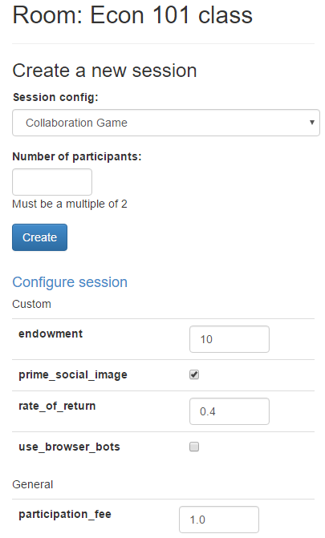

Treatments
To assign participants to different treatment groups, you
can use creating_session. For example:
def creating_session(subsession):
import random
for player in subsession.get_players():
player.time_pressure = random.choice([True, False])
print('set time_pressure to', player.time_pressure)
You can also assign treatments at the group level (put the BooleanField
in Group and change the above code to use get_groups() and group.time_pressure).
creating_session is run immediately when you click the “create session” button,
even if the app is not first in the app_sequence.
Treatment groups & multiple rounds
If your game has multiple rounds, a player could have different treatments in different rounds,
because creating_session gets executed for each round independently.
To prevent this, set it on the participant, rather than the player:
def creating_session(subsession):
if subsession.round_number == 1:
for player in subsession.get_players():
participant = player.participant
participant.time_pressure = random.choice([True, False])
Balanced treatment groups
The above code makes a random drawing independently for each player,
so you may end up with an imbalance.
To solve this, you can use itertools.cycle:
def creating_session(subsession):
import itertools
pressures = itertools.cycle([True, False])
for player in subsession.get_players():
player.time_pressure = next(pressures)
Choosing which treatment to play
In a live experiment, you often want to give a player a random treatment. But when you are testing your game, it is often useful to choose explicitly which treatment to play. Let’s say you are developing the game from the above example and want to show your colleagues both treatments. You can create 2 session configs that are the same, except for one parameter (in oTree Studio, add a “custom parameter”):
SESSION_CONFIGS = [
dict(
name='my_game_primed',
app_sequence=['my_game'],
num_demo_participants=1,
time_pressure=True,
),
dict(
name='my_game_noprime',
app_sequence=['my_game'],
num_demo_participants=1,
time_pressure=False,
),
]
Then in your code you can get the current session’s treatment with:
session.config['time_pressure']
You can even combine this with the randomization approach. You can check
if 'time_pressure' in session.config:; if yes, then use that; if no,
then choose it randomly.
Configure sessions
You can make your session configurable, so that you can adjust the game’s parameters in the admin interface.

For example, let’s say you have a “num_apples” parameter.
The usual approach would be to define it in C,
e.g. C.NUM_APPLES.
But to make it configurable, you can instead define it in your session config.
For example:
dict(
name='my_session_config',
display_name='My Session Config',
num_demo_participants=2,
app_sequence=['my_app_1', 'my_app_2'],
num_apples=10
),
When you create a session in the admin interface, there will be a text box to change this number.
You can also add help text with 'doc':
dict(
name='my_session_config',
display_name='My Session Config',
num_demo_participants=2,
app_sequence=['my_app_1', 'my_app_2'],
num_apples=10,
doc="""
Edit the 'num_apples' parameter to change the factor by which
contributions to the group are multiplied.
"""
),
In your app’s code, you can do session.config['num_apples'].
Notes:
For a parameter to be configurable, its value must be a number, boolean, or string.
On the “Demo” section of the admin, sessions are not configurable. It’s only available when creating a session in “Sessions” or “Rooms”.